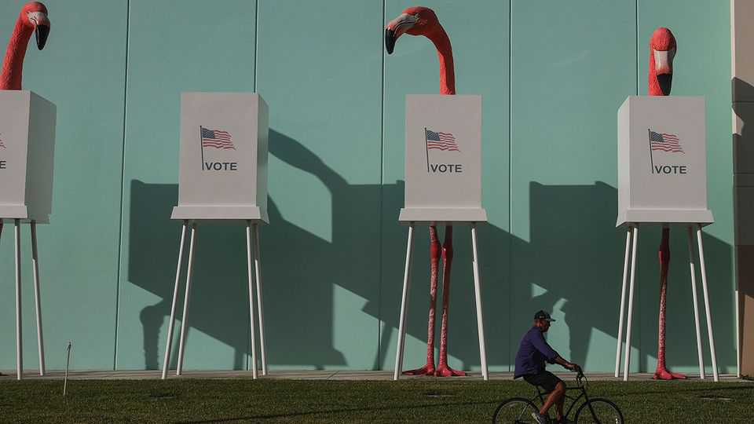
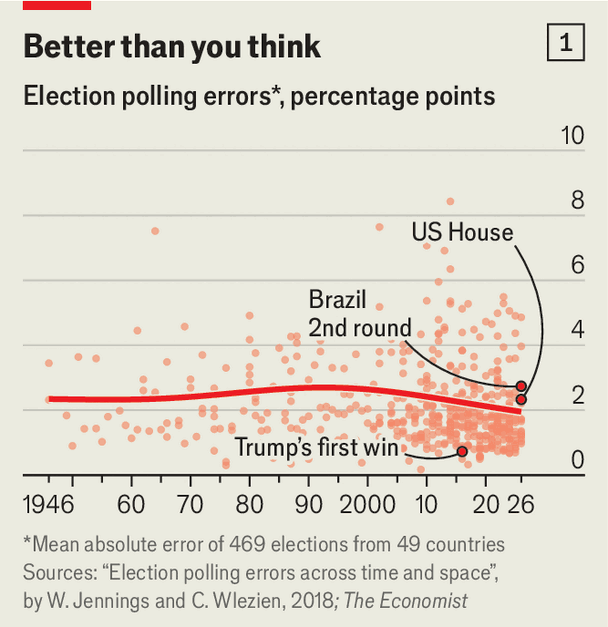
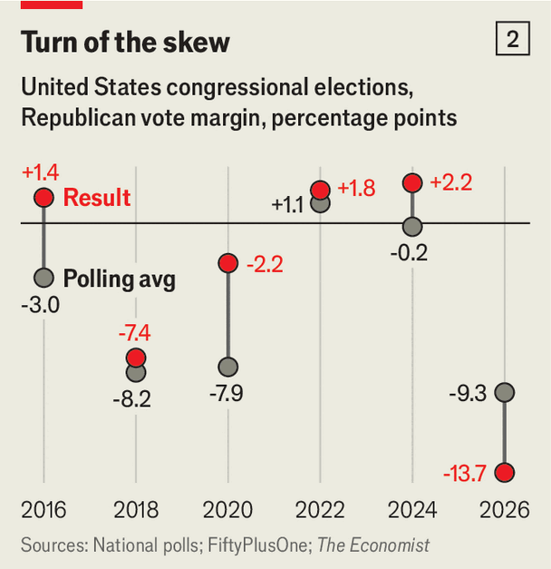
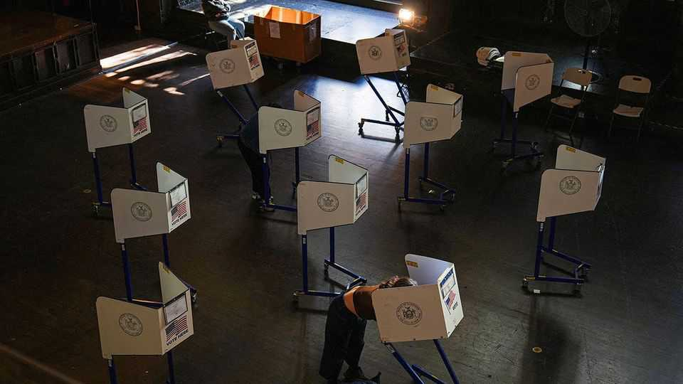

Despite recent misses, political polling is more accurate than ever
But elections in America and Brazil illustrate how hard the task is becoming

Nov 12th 2026
“We should always be afraid of many things,” muses Andrei Roman. “There’s not much we can do about them, though.” His gloom is not for humanity in general, but for one of its less celebrated endeavours: election polling.
Mr Roman’s polling firm, AtlasIntel, was spot on in its soundings of American voters before the recent midterm elections. But most pollsters underestimated the Democrats’ support. And AtlasIntel did get it wrong twice in Brazil’s recent presidential election, first suggesting that Luiz Inácio Lula da Silva, the left-wing incumbent, would win the first round of voting and then that Flávio Bolsonaro, his opponent, was ahead in the run-off. Many other pollsters made the same mistake.

Are polls getting worse? Our analysis suggests not. Building on a dataset created by Will Jennings and Christopher Wlezien, two professors of political science, The Economist analysed polls of 469 elections in 49 countries between 1946 and 2026. Over the past 80 years, we found, polls have become slightly more accurate. An average of polls conducted within ten days of an election predicts a given party or candidate’s share of the vote with a mean error of just two percentage points (see chart 1).
That result is all the more remarkable given the methodological challenges besetting pollsters. There are many reasons why polling should not work, but it does. In fact, it works better than the alternatives.
The principle behind public-opinion surveys is simple. If you ask a large enough sample of random individuals in a population for their view on a given topic, you can say with a reasonable degree of accuracy that the whole population shares their beliefs. Early polling pioneer George Gallup likened it to tasting a soup. Providing the soup is well-mixed, you need only one spoonful to know how it tastes.
In practice, it can be very difficult to ensure that a sample is truly random. Famously the Literary Digest, an American magazine, inferred in 1936 from 2.4m postcards sent in by readers—a sample size unheard of today—that Republican Alf Landon would be elected president. Instead, Franklin Roosevelt was re-elected in a landslide. The sample may have been huge, but it was not random.
What followed was the first of many reinventions for the polling industry as it embraced “scientific” methods. In the 1950s and 1960s most pollsters relied on face-to-face interviews at random addresses. In the 1970s and 1980s many shifted to telephone interviews, calling numbers at random. But the willingness of ordinary voters to speak to pollsters has waned. “When I started doing this, the idea was you could do a phone survey and get a 50% response rate,” recalls Doug Rivers of YouGov, a polling firm that partners with The Economist. Now he reckons the response rate is 1-2%.
As a result, a majority of pollsters have given up on using strictly random samples. Instead, the most common form of polling now involves self-selected panels of online survey-takers, who are paid for each survey they complete. Rather than randomness, pollsters rely on quotas of different types of respondents and post facto “weights”, which adjust a sample to make it representative of the whole population. In a recent poll of Americans by Léger, a Canadian firm, 60% of respondents were 55 or older, for example. After weights were applied, they made up only 41% of the survey—a far cry from the ideal of random sampling.
Contrary to some conspiracy theories, pollsters have a strong interest in getting election surveys right. Rather than money-makers, election polls are in effect advertisements intended to persuade customers to commission research on other topics. If pollsters fumble an election, it hurts their reputation. “We always used to say political polling is 90% of the publicity and less than 1% of the revenue,” says Ben Page, a former boss of Ipsos, another polling firm.
Pollsters’ judgment remains critical, however. In 2016, for example, the New York Times gave four pollsters the same raw data from Floridian voters in that year’s presidential election. After weighting, the groups came back with four different conclusions about how the election would go. One showed Mr Trump leading by a percentage point; another, trailing by four.
Polling firms must play methodological whack-a-mole, correcting errors from the previous election and anticipating future mistakes. In recent years discussion has been dominated by the issue of “non-response bias”: the idea that those who do not want to be polled lean in a particular direction politically. As politics in many Western countries has become less about economics and more about cultural issues, educated voters—who are more likely to respond to polls—have moved towards centre-left parties. A team of political scientists including Messrs Jennings and Wlezien found that polls have tended to overestimate left-wing parties by an average of 1.4 percentage points globally.
In America, this effect has been compounded by Republican scepticism of the institutions, such as universities and the media, that often commission or produce polls. In the past three American presidential elections, polls substantially underestimated support for Donald Trump. In its poll in October of the Senate race in Kansas, the Washington Post reported that 32% of Democrats responded to its survey, compared with only 12% of Republicans. The large gap suggests not only that Republicans were underrepresented, but also that the few who did respond may not have been representative.
Along with non-response bias, online pollsters have to contend with “low-quality” respondents, who are more interested in bagging the reward for completing the survey than in giving their opinions. Mr Page compares the struggle to weed out such participants to drone warfare between Russia and Ukraine, with each side innovating just as fast as the other.
“Polling is increasingly about statistical modelling as much as sampling,” says Mr Jennings. One of the most successful polling initiatives of the midterm elections was a collaboration between the New York Times and Siena College. This year the team adopted an incredibly complicated system of survey weights which involved estimating the left-right position of every registered voter in the country, to ensure polls were ideologically representative. On top of that, rather than weighting for each demographic characteristic separately, the pollsters created a system that assesses respondents by how unusual their unique combinations of characteristics were, compared with the population (“energy balancing”). The previous method would have overestimated the winning margins of Democrats who won Senate races by three points, on average. The new system showed almost no bias.
So what were pollsters doing wrong in America and Brazil? “Mobilisation was a huge component of the result for both the first round and the run-off, like never before,” says Mr Roman of Brazil’s election. “Voters didn’t show up for Lula in the first round, and they really showed up on a mass scale in the run-off.” After Mr Bolsonaro’s victory in the first round, centre-left voters realised that he might really become president. Lula’s supporters were energised, particularly on social media. Overall turnout rose from 119m to 124m, with larger increases in municipalities won by Lula, especially in big cities. In the end he won with 52% of the vote—four points higher than his share in pre-election polls.
Surveys also seem to have misjudged turnout in America’s midterms. The Economist analysed seven polls released in October that included a detailed breakdown of the composition of their sample. Respondents who said they had voted for Kamala Harris in 2024 outweighed those who had plumped for Donald Trump by two percentage points. That number already indicates some turnout adjustment on the part of pollsters: in reality she lost the election by 1.5 points. However, exit polls suggest that the actual electorate this November was even bluer, having preferred Ms Harris by five points. If you retrospectively adjust the polls to account for this, they go from showing Democrats with a 9.5-point lead to 11.5, explaining around half of the polling error (Democrats won by 14 points).
For Democrats, this enthusiasm advantage was partly driven by black voters, especially in the South, who helped elect Democratic senators in deep-red South Carolina and Mississippi. The New York Times estimates that they made up 24% and 33% of voters in those two states respectively, up by three percentage points compared with 2024. Elsewhere, Hispanic voters showed up to vote in greater numbers than in previous midterm elections. Meanwhile, many Republicans stayed at home. In counties and districts won by Ms Harris with more than 80% of the vote in 2024, turnout in the midterms was around 81% of that in the presidential election. In those where Mr Trump won with more than 80% of the vote, the figure was 12 percentage points lower.
The elections expose a particular weakness of opinion polls. “My general view is that surveys are totally crappy these days about getting non-voters,” says Mr Rivers. By their nature, those who respond to polls are more likely to be highly engaged, and more likely to vote, than those who do not. At the same time, respondents are optimistic (or dishonest) when answering questions about their likelihood to vote. Unlike demographic questions, which are fairly consistent over time and which respondents tend to answer accurately, turnout is fluid. “The typical approach would be to ask people on a scale of one to ten how likely you are to vote,” says Mr Page. “But if you get a big increase in the number of people who say they are eight, nine or ten, do you believe them or not?”

Despite this weakness, the polling misses also show that pollsters are striving to improve their estimates. In Brazil polling firms re-weighting their surveys after the first round to reflect the electorate that voted for Mr Bolsonaro. This was methodologically sound, even though it led them to overstate his support in the second round. Meanwhile, American pollsters were trying to correct their errors in the election of 2024, when they underestimated Republicans (see chart 2).
The Economist’s forecast of this year’s congressional elections aimed to anticipate polling errors, based on historical data. Our model incorrectly judged that pollsters were overestimating the Democrats, since projected landslides tend to underwhelm. It also judged that the low share of undecided voters in this year’s polls was a good sign for Republicans, because undecided voters tend to vote against the president’s party in midterms. These factors meant that the central forecast of our model compounded the pollsters’ errors, rather than remedying them.
The similarities in the polling misses in America and Brazil might lead some observers to predict the same skew in polling of other elections. Optimistic centrists might, for example, conclude that polarising right-wing candidates will always galvanise centre-left voters to defy the polls. Indeed, that is the hope of French centrists, who are looking warily towards next year’s presidential election. Marine Le Pen, the leader of the populist-right National Rally, leads opinion polls of the first round with around 35% of the vote, on average. She also leads most hypothetical polls of the second round. In the past two presidential elections, Emmanuel Macron, France’s centrist president, defeated Ms Le Pen soundly, with a slightly higher vote share than polls had predicted.

However, the historical evidence for repeated polling errors is thin, let alone across different countries, or in presidential elections with different candidates. Indeed, the second-placed candidate in most polls is a left-wing firebrand, Jean-Luc Mélenchon, with around 17% support. He is one of the most polarising and unpopular figures in France, whereas voters have warmed to Ms Le Pen since 2022. A contest between the two is unlikely, therefore, to inspire a surge of voters determined to foil Ms Le Pen. What is more, French pollsters may have learned from their previous mistakes, or even overcorrected. Though a polling error is certainly possible, relying on one is never a good idea. (The Economist’s forecast model of the French election will be published next year.)
Likewise, social democrats hope that Pedro Sánchez—a left-wing escape-artist who is prime minister of Spain—can repeat his poll-defying feat in 2023 and cling to power. That year, polls underestimated his Socialist Party (PSOE) by around three percentage points. It was just enough to cobble together a coalition of leftist and regionalist parties to stay in power. The Economist’s poll tracker for the election on November 29th shows 27% support for PSOE, just behind the centre-right People’s Party on 31%. However, since 2023 Mr Sánchez’s coalition partners have taken a tumble and the populist-right Vox has gained ground. The combined right-wing parties are polling at 50%, so should secure a majority under Spain’s electoral system. The left trails on 35%, with regional parties on 9%. There is still time for public opinion to shift, but if the polls hold, only an unusually large error would save Mr Sánchez.
Next year anxious poll-watchers will no doubt hope for a polling miss that favours their preferred candidates in Poland and Italy, too. However, there is no sign that polling errors are growing, nor that their slight past skew to the left has become a bias to the right. An average absolute polling error of two points does not preclude the possibility of a big miss but, given the ever deeper potential pitfalls, is remarkably accurate. From early in the midterm campaign, the polls clearly indicated a big win for Democrats and a swing from Latinos in particular. That the polling averages foresaw the biggest blue wave in a generation, rather than two, seems forgivable.
Most important, polls look better than the alternatives. In many of the most infamous polling misses, such as Britain’s vote to leave the European Union or Mr Trump’s election in 2016, the polls came closer to the final result than most pundits did. A survey of 33 British journalists before the Brexit referendum found that 32 of them expected the country to vote to remain in the EU, for example. Some vaunted alternatives, such as social-media monitoring, have never taken off. Others, such as prediction markets or AI-generated surveys, themselves depend on polling. The famous prediction-market “whale”, who made $80m betting on Mr Trump’s re-election in 2024, reportedly commissioned private polling from YouGov, for example.
As good as the polls’ record is, their creators should be clear about their imperfections. For pollsters that chiefly means being transparent. Methodological notes by the Washington Post and the New York Times about the surveys they had commissioned helped contextualise their polling in this election, for example. More information about sampling and weighting can improve scrutiny, making it easier to weed out fake polls and cowboy pollsters. Publishing survey results even when they are surprising can help avoid “herding”, whereby polling is skewed by pollsters’ reluctance to go out on a limb.
Consumers of polls, meanwhile, must understand their limitations. They should treat any individual poll with a dose of scepticism. Where possible, they should refer to averages of multiple surveys, such as those produced by The Economist. In all elections, they should be ready for the polls to be off by a few percentage points in either direction for every party or candidate. The polls are better than ever, but they are not infallible. ■